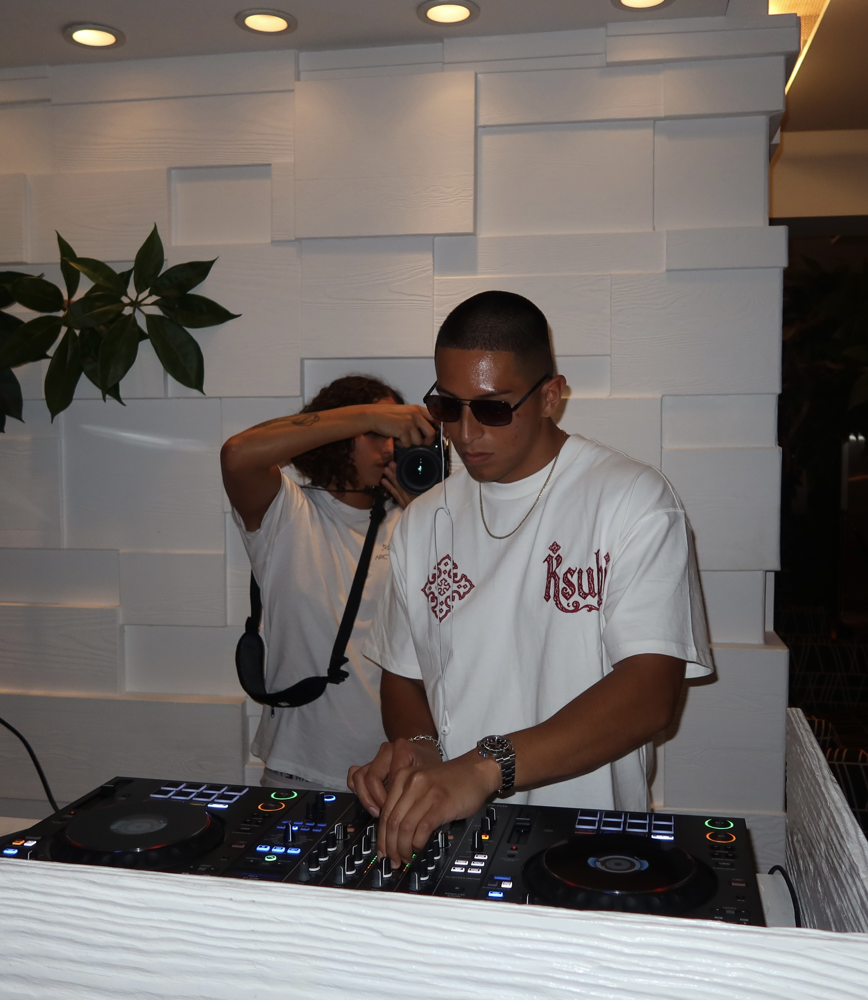

My name is Daniel, but you can call me Danny if you'd like. I'm a software engineer with 4 years of experience and counting working in big tech in the Bay Area. My experience has been mostly in robotics. I started with spatial geometry and mapping/SLAM, and lately do more AI integration with robotics and distributed systems. Android development has been a constant through my few years, running as the app & UI layer in the products I've worked on. For being a software engineer, I'm very, very anti tech.
I believe that our smartphones, social media, and being chronically online are all means of distraction and extraction of attention. Most of my life is lived without a smartphone. I don't use one in the traditional way, and I only use social media to post; otherwise I don't have the apps at all. I'm anti consumption, and I believe you should always choose the option that gives you independence. Learning to cook is one of them. You should always use a VPN, pay with cash, and be very wary of giving your personal information to websites.
I'm anti-nerd in that I believe everyone should try their best to be a well rounded human, and specializing in a domain doesn't serve as an excuse to not be capable in other things. Fitness is not a passion for me, but rather a requirement in that I believe most people should strive to be as strong and physically capable as possible. I also believe that you need some degree of physicality, as we as humans have not evolved nearly as much as technology might make you think we have, and physical ability still lives in our subconscious.
My days are simple: I wake up, I work out, I eat, sauna, shower, then work for the rest of the day. I believe success is derived from being good at the simple things and subtracting what doesn't serve the mission.
I'm anti-modernity in many ways. All of these are very bad for you: porn, doomscrolling, ultra-processed foods, vaping.

| Favorite of all time | Chip War by Chris Miller |
| Should read | The Sovereign Individual by James Dale Davidson & William Rees-Mogg |
| Fun, short pick-me-up | The Precious Present by Spencer Johnson |
| Insightful | The Laws of Human Nature by Robert Greene |
| Playful and informative | Enshittification by Cory Doctorow |